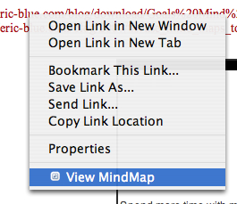
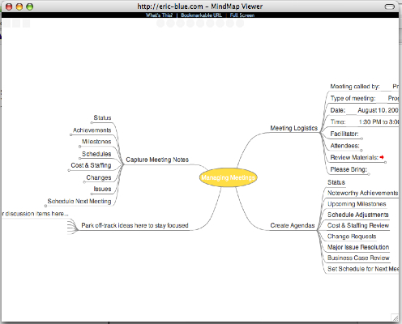

DOWNLOAD PLUGIN
The MindMap Viewer plugin is available for Firefox 2.0 - 3.X. The plugin allows you to right-click on a supported mindmap
URL, and the viewer will be launched in a new window.
Works with:
Firefox: 2.0 - 3.5
SCREENSHOTS
Right-Click Context

MindMap Window
